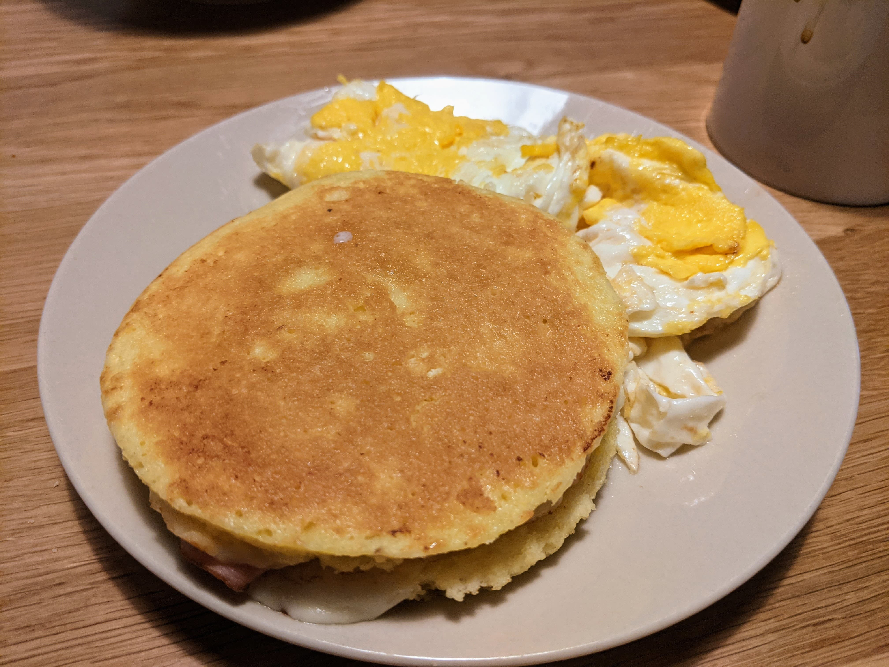

Microwave Keto Bread

Ingredients
18g almond flour
14gbutter, melted
2g baking powder
1 egg
Instructions
-
Mix all ingredients on a microwave-safe bowl.
-
Microwave for 90 seconds.
-
This is a bit on the dry side, so I prefer to make a grilled cheese sandwitch out of it by slicing it in half.